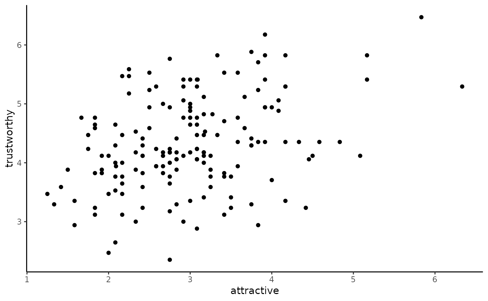
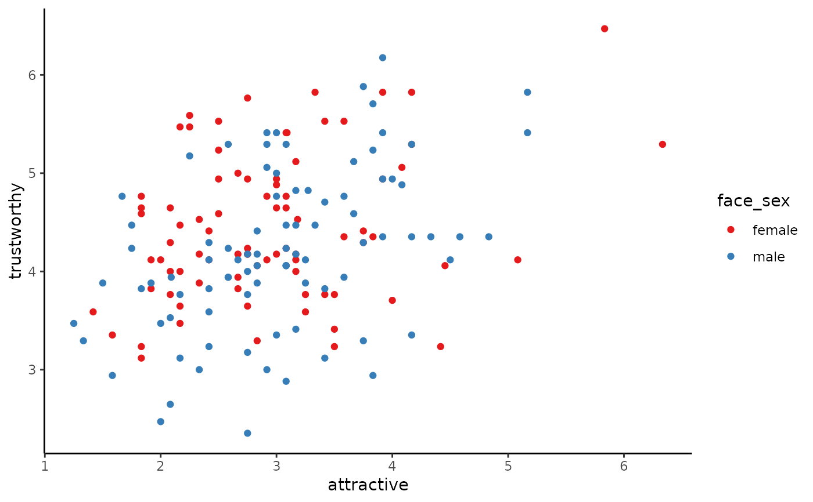
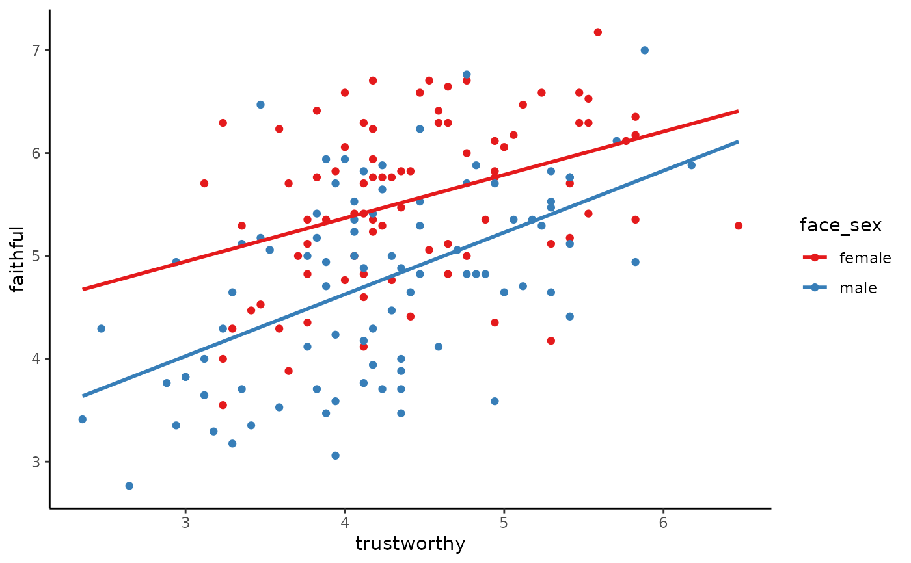

scatterplot.RdThis function is a wrapper around the typical ggplot command to create two
dimensional scatterplots, i.e. using geom_point. It provides the option of
colouring point by a third variable, one that is usually, though not
necessarily categorical. Also, it provides the option of placing the line of
best fit on the scatterplot. If points are coloured by a categorical
variable, the a different line of best for each value of the categorical
variable is provided.
scatterplot(x, y, data, by = NULL, best_fit_line = FALSE)
| x | A numeric variable in |
|---|---|
| y | A numeric variable in |
| data | A data frame with the |
| by | An optional variable, usually categorical (factor or character), by which the points in the scatterplot are byed and coloured. |
| best_fit_line | A logical variable indicating if the line of best fit should shown or not. |
scatterplot(x = attractive, y = trustworthy, data = faithfulfaces)scatterplot(x = attractive, y = trustworthy, data = faithfulfaces, by = face_sex)scatterplot(x = trustworthy, y = faithful, data = faithfulfaces, by = face_sex, best_fit_line = TRUE)